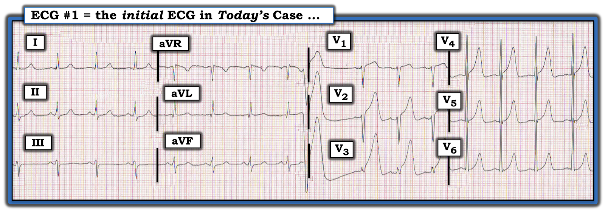
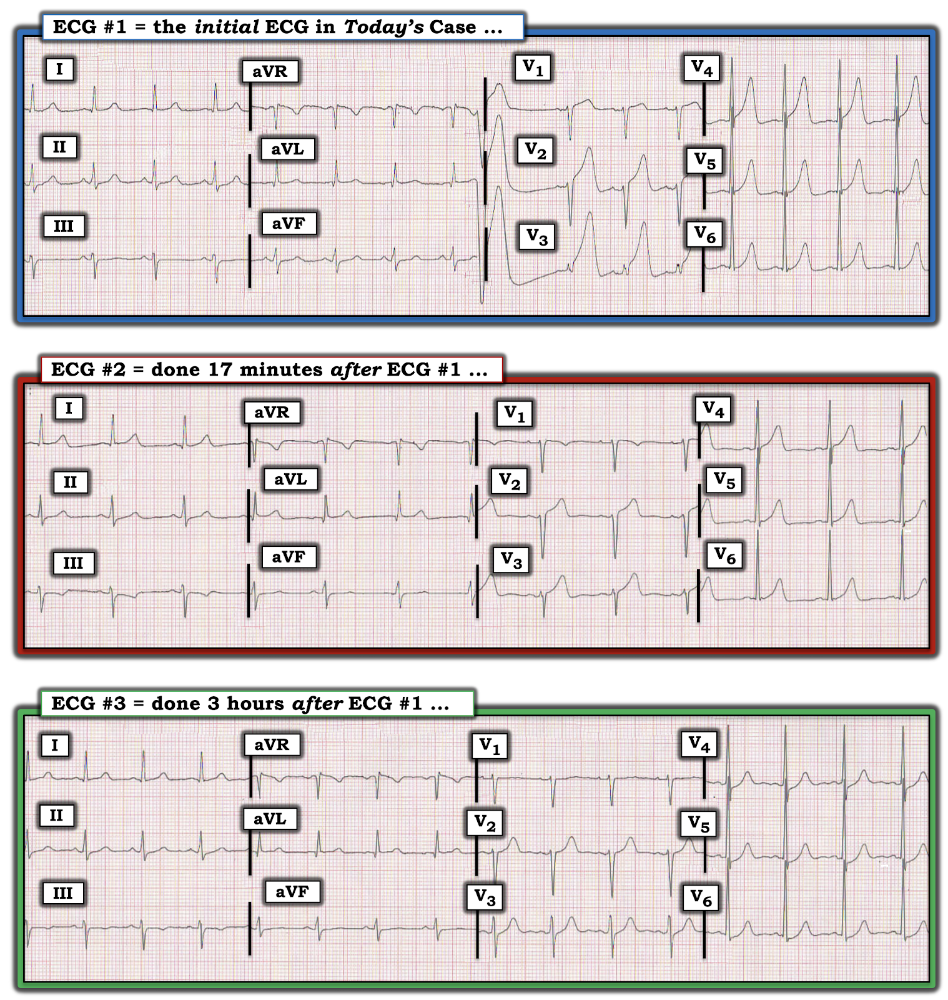
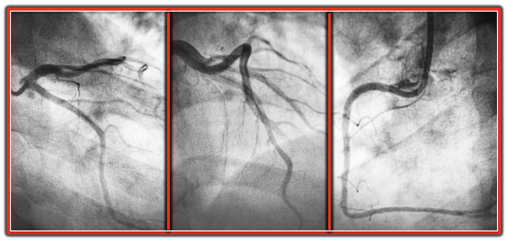
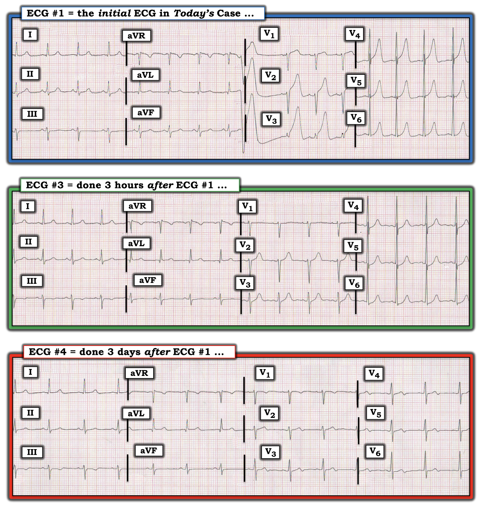

ECG Blog #300 — Vì sao nó xảy ra vào ban đêm?
Điện tâm đồ ở Hình-1 được ghi từ một người đàn ông 50 tuổi bị đau ngực sau một cơn xúc động. Vì nơi làm việc của ông ở gần phòng khám của bác sĩ riêng — điện tâm đồ này được ghi trong vòng ~5 phút sau biến cố.
- BẠN sẽ đọc điện tâm đồ ở Hình-1 như thế nào?
- Bạn giải thích thế nào về việc bệnh nhân kể lại 3 cơn tương tự gần đây — mỗi lần cơn đau ngực đều tự hết trong vòng 15 phút?


SUY NGHĨ CỦA TÔI về điện tâm đồ ở Hình-1:
Nhịp là nhịp xoang với tần số ~90-95/phút. Có một PVC (ở giữa bản ghi — ngay chỗ chuyển từ các chuyển đạo aVR,aVL,aVF — sang các chuyển đạo V1,V2,V3).
- Về các khoảng — Khoảng PR bình thường. QRS hẹp. Tuy nhiên — QTc trông kéo dài (nhất là ở các chuyển đạo V2, V3).
- Trục mặt phẳng trán bình thường (khoảng 0 độ — vì QRS đẳng điện ở chuyển đạo aVF).
- Về Lớn các buồng tim — biên độ QRS có vẻ tăng ở các chuyển đạo trước tim bên (dù như ta sẽ thấy ngay sau đây — điều này không nhất thiết phản ánh LVH).
Về Thay đổi Q-R-S-T:
- Có các sóng Q nhỏ và hẹp ở mỗi chuyển đạo bên (tức là các chuyển đạo I, aVL, V5,V6). Chúng chưa rõ ý nghĩa.
- Tăng tiến sóng R (R wave progression) cho thấy vùng chuyển tiếp bình thường ở khu vực các chuyển đạo giữa ngực — nhưng có hiện tượng mất điện thế lạ lùng với phức bộ QRS rất nhỏ ở chuyển đạo V3.
- Dấu hiệu nổi bật nhất trên điện tâm đồ #1 — là các sóng T cao, nhọn ở các chuyển đạo V2 đến V6 (đặc biệt rõ ở các chuyển đạo V2, V3, V4). Ngoài ra còn có ST chênh lên tại điểm J ở các chuyển đạo V1 đến V4 (đạt biên độ 2-2.5 mm ở các chuyển đạo V2 và V3). Đoạn ST dẹt nhưng không chênh xuống ở mỗi chuyển đạo thành dưới.
NHẬN ĐỊNH:
PVC cùng các sóng T rất cao, nhọn ở nhiều chuyển đạo trước tim kèm ST chênh lên ít nhất 2 mm ở các chuyển đạo V2,V3 trên bệnh nhân mới khởi phát đau ngực này — gợi ý mạnh tắc cấp LAD (động mạch liên thất trước — Left Anterior Descending) cho đến khi chứng minh được điều ngược lại.
=============================
Ca bệnh tiếp diễn:
Ngay sau khi ghi điện tâm đồ #1 — bệnh nhân nói, "Tôi đỡ đau ngực rồi. Nó sẽ tự hết thôi. Tôi từng bị những đợt đau như thế này thành từng cụm, thường xảy ra vào khoảng 5-6 giờ sáng".
- Bệnh sử bổ sung: Bệnh nhân nghiện thuốc lá nặng (2 bao mỗi ngày). Ngoài ra tiền sử bệnh không có gì đặc biệt. Tiền sử gia đình không có gì đặc biệt.
- Troponin ban đầu cho kết quả âm tính.
- Bệnh nhân từ chối dùng thuốc — vì vậy không dùng nitroglycerin cũng không dùng thuốc giảm đau. Trong ~10 phút tiếp theo — cơn đau ngực hết hoàn toàn, và vào lúc đó điện tâm đồ #2 được ghi (bản ghi ở giữa trong Hình-2).
- Bệnh nhân ổn định. Điện tâm đồ #3 được ghi khoảng 3 giờ sau điện tâm đồ ban đầu (bản ghi dưới cùng trong Hình-2). Suốt thời gian này — bệnh nhân vẫn không đau ngực.
CÂU HỎI:
- Với diễn tiến các sự kiện như trên — bạn sẽ đọc các điện tâm đồ liên tiếp ở Hình-2 NHƯ THẾ NÀO?
- Dựa trên bệnh sử trên — chẩn đoán có khả năng nhất là GÌ?
- Theo bạn, thông tim cho thấy điều gì?


SUY NGHĨ CỦA TÔI về bệnh sử và các điện tâm đồ liên tiếp:
Các thay đổi sóng ST-T cực độ thấy ở các chuyển đạo trước tim trên điện tâm đồ ban đầu đã cải thiện rõ rệt trên điện tâm đồ ghi chỉ 17 phút sau đó.
- Như đã nhấn mạnh trong phần bệnh sử ở trên — bệnh nhân đã rất quen thuộc với chuỗi sự kiện trong đó căng thẳng hay xúc động — hoặc đơn giản là những giờ sáng sớm, gây ra một cơn đau ngực dữ dội ngắn ngủi mà ông biết sẽ tự hết sau vài phút.
- MẤU CHỐT lâm sàng: Điện tâm đồ ban đầu ( = điện tâm đồ #1 trong Hình-2) được ghi trong cơn đau ngực dữ dội này. Vài phút sau, cơn đau ngực giảm — và gần như hết hẳn vào lúc ghi điện tâm đồ #2. Dù một số chuyển đạo giữa ngực trên điện tâm đồ #2 vẫn còn sóng T hơi lớn hơn mong đợi — sự cải thiện so với điện tâm đồ #1 là hiển nhiên.
- Điện tâm đồ #3 (ghi ~3 giờ sau điện tâm đồ #1) — cho thấy biên độ sóng T giảm thêm. Không còn ST chênh lên nữa. Thay vào đó — các chuyển đạo V3 đến V6 có ST chênh xuống 0.5-1.0 mm.
DIỄN TIẾN tiếp theo của ca hôm nay:
- Troponin huyết thanh không bao giờ tăng.
- Thông tim cho thấy các động mạch vành bình thường! (Hình 3).
- Đã loại trừ nhồi máu cơ tim cấp (acute MI). Bệnh nhân xuất viện với chẩn đoán Đau thắt ngực Prinzmetal (Prinzmetal Angina).


=============================
Đau thắt ngực Prinzmetal:
Thực thể được biết đến với tên gọi đau thắt ngực Prinzmetal (Prinzmetal Angina) (còn gọi là đau thắt ngực "do co thắt mạch" (vasospastic) hoặc "biến thái" (variant)) — là một hội chứng gồm những cơn đau ngực tái diễn xảy ra lúc nghỉ, đi kèm các thay đổi sóng ST-T thoáng qua (ST chênh lên và/hoặc chênh xuống). Dưới đây tôi tóm tắt các điểm CHÍNH từ những nguồn sau — (Ziccardi và Hatcher: StatPearls-NCBI Bookshelf- 7/31/2021) — (Bayés de Luna và cs.: Ann Noninvasive Electrocardiol 19:442-453, 2014 Bài Đồng thuận (Consensus Paper)) — và — (Ghadri và cs.: Q J Med 107:375-377, 2014).
- Các đặc điểm đặc trưng của đau thắt ngực Prinzmetal — là: i) Các cơn đau ngực tự hết (thường trong vòng 5-15 phút mà không cần điều trị!); và, ii) Các cơn đau ngực thường xảy ra thành từng cụm trong những ngày liên tiếp (hoặc gần như liên tiếp). May mắn là — các cơn đau ngực hết nhanh hơn nếu dùng sớm nitrat tác dụng ngắn.
- Triệu chứng thường có tính chất nhịp ngày đêm (circadian) — tức là các cơn hay xảy ra nhất trong khoảng từ nửa đêm đến sáng sớm. Ở mỗi bệnh nhân — các cơn thường xảy ra vào khoảng cùng một thời điểm trong ngày hoặc đêm.
- Khoảng 50% bệnh nhân đau thắt ngực Prinzmetal có các động mạch vành bình thường khi thông tim. Phần lớn số còn lại có các tổn thương mạch vành không gây tắc nghẽn (tức là hẹp dưới 50% lòng mạch).
- Các thay đổi trên điện tâm đồ có thể gồm ST chênh lên có/không kèm ST chênh xuống soi gương (reciprocal) — sau đó có thể (hoặc không) là các thay đổi ST do tái tưới máu (tức là sóng T đảo ngược — Xem bên dưới!).
- Nhận diện sớm thực thể này là quan trọng vì có thể xảy ra các rối loạn nhịp ác tính có khả năng đe dọa tính mạng (bao gồm VT/VFib, blốc AV mức độ cao). Nhồi máu cơ tim không thường gặp (vì các cơn thường tự hết trong vòng 15 phút) — nhưng nhồi máu cơ tim cấp vẫn có thể xảy ra.
- Cơ chế của đau thắt ngực Prinzmetal chưa rõ — dù kết cục cuối cùng có vẻ là co thắt mạch vành lan tỏa hoặc khu trú, có lẽ được khởi phát bởi tình trạng tăng hoạt giao cảm (có hoặc không kèm giảm trương lực phế vị) — bởi giảm men tổng hợp nitric oxide kèm rối loạn chức năng nội mô — và/hoặc bởi yếu tố di truyền. Tình trạng tăng phản ứng của mạch vành có thể được khởi phát khi xuất hiện hẹp mạch vành nền — HOẶC — đau thắt ngực do co thắt mạch "thuần túy" có thể gặp ở những bệnh nhân có động mạch vành hoàn toàn bình thường.
- Trong số các "yếu tố khởi phát" tiềm năng của cơn đau thắt ngực có thuốc/chất (cocaine, amphetamine, cần sa) — đặc biệt nếu đi kèm hút thuốc lá! Các yếu tố khởi phát tiềm năng khác gồm tiếp xúc lạnh và gắng sức ở một tỷ lệ nhỏ bệnh nhân. Tuy vậy — không nhất thiết phải có yếu tố khởi phát nào.
- Các rối loạn "co thắt mạch" khác (tức là hiện tượng Raynaud, migraine điển hình) có thể đi kèm ở bệnh nhân đau thắt ngực Prinzmetal.
- Tuổi trung bình khi biểu hiện của bệnh nhân đau thắt ngực Prinzmetal là người trưởng thành từ 40-50 tuổi. Nhưng bệnh vẫn gặp ở các nhóm tuổi khác.
- Điều trị chuẩn đau thắt ngực Prinzmetal "do co thắt mạch" gồm nitrat (ngắn hạn và/hoặc dài hạn — lưu ý rằng nitrat dài hạn có thể gây dung nạp thuốc) — thuốc chẹn kênh canxi (tức là vẫn còn tranh luận về việc thuốc nào tốt nhất) dài hạn — cùng với nhấn mạnh việc cai thuốc lá hoàn toàn!
- Các biện pháp điều trị bổ sung được cân nhắc gần đây hơn gồm Nicorandil (một thuốc vừa là nitrat vừa hoạt hóa kênh K, có tác dụng giãn mạch vành) — và Fluvastatin (dường như có lợi cho một số bệnh nhân đau thắt ngực do co thắt mạch nhờ cải thiện chức năng nội mô).
- Trong số các thuốc cần tránh có thuốc chẹn ß (có thể gây kích thích thụ thể alpha không bị đối kháng) — thuốc chủ vận alpha (tức là Oxymetazoline, Pseudoephedrine) — Sumatriptan (một thuốc chủ vận thụ thể serotonin dùng điều trị cơn migraine cấp — tác dụng bằng cách gây co mạch).
- LƯU Ý: Chẩn đoán đau thắt ngực Prinzmetal có thể khó — đặc biệt vì bệnh thường xảy ra về đêm — và triệu chứng cũng như thay đổi trên điện tâm đồ tự hết trong vòng vài phút! (tức là thường trước khi kịp ghi điện tâm đồ). Vì lý do này — nắm được các đặc điểm lâm sàng nêu trên và loạt thay đổi điện tâm đồ dự kiến mà tôi mô tả dưới đây là điều thiết yếu để nhận diện thực thể này!
- Tin "TỐT" là — đau thắt ngực Prinzmetal ngày nay ít gặp hơn nhiều so với những năm trước (có lẽ nhờ các biện pháp chống đau thắt ngực hiệu quả hơn và tỷ lệ hút thuốc trong dân số chung giảm). Ngoài ra — hiệu quả dài hạn của thuốc chẹn kênh canxi đã giúp kiểm soát triệu chứng tốt hơn nhiều và giảm bệnh suất ở đa số bệnh nhân (nhất là ở những người bỏ thuốc lá).
- Bình luận của tác giả: Tôi nhớ rằng trong thời gian học y, chúng tôi được đặc biệt lưu ý để biết đến thực thể này. Dù vậy, mặc dù rõ ràng có một phần yếu tố co thắt mạch vành ở một tỷ lệ bệnh nhân mắc bệnh mạch vành — đau thắt ngực Prinzmetal ở dạng "thuần túy" như mô tả ở trên (như gặp ở bệnh nhân hôm nay) không phải là một rối loạn thường gặp.
=============================
Đặc điểm Điện tâm đồ Đặc trưng của Đau thắt ngực Prinzmetal:
Đa số bệnh nhân đau thắt ngực Prinzmetal có điện tâm đồ nền tương đối bình thường, nhiều nhất chỉ có các bất thường sóng ST-T không đặc hiệu. Dưới đây tôi tổng hợp các Đặc điểm Điện tâm đồ CHÍNH cần tìm ở bệnh nhân Prinzmetal, như được trình bày chi tiết trong Bài Đồng thuận quốc tế năm 2014 của Bayés de Luna và cs.:
- Thay đổi điện tâm đồ ban đầu hay gặp nhất — là sự xuất hiện sóng T cao, đối xứng và thường nhọn — kèm theo QTc tăng nhẹ.
- Đôi khi — có thể thấy sóng U âm.
- Sóng T nhọn lên thường được tiếp nối bằng ST chênh lên tăng dần. Tình trạng ST chênh lên này thường kéo dài dưới 5 phút — sau đó sóng T trở lại dần dạng bình thường hơn (hoặc chỉ hơi nhọn). Cơn đau ngực của bệnh nhân thường tương ứng với giai đoạn ST chênh lên tối đa.
- Một số bệnh nhân có ST chênh xuống soi gương trong giai đoạn ST chênh lên. Khi điều này xảy ra — nó gợi ý co thắt mạch vành khu vực (hơn là lan tỏa).
- Điều thú vị là — biên độ sóng R có xu hướng tăng — trong khi biên độ sóng S có xu hướng giảm (nếu không nói là biến mất) trong giai đoạn ST chênh lên.
- Thường có hiện tượng dốc lên của đoạn T-Q (hoặc đường nền T-P) trong giai đoạn ST chênh lên.
- Đôi khi bệnh nhân có thể biểu hiện hiện tượng luân phiên (alternans) (từ nhát này sang nhát kế tiếp) của đoạn ST chênh lên hoặc của đoạn T-Q dốc lên.
- Trong giai đoạn ST chênh lên thoái lui — có thể thấy sóng T đảo ngược, có thể sâu và giống các thay đổi điện tâm đồ trong hội chứng Wellens (tức là có lẽ phản ánh sự tiến triển của sóng T tái tưới máu).
- PVC, kể cả những đợt ngắn NSVT (nhịp nhanh thất không bền bỉ — Non-Sustained Ventricular Tachycardia) — thường gặp trong giai đoạn đau ngực và ST chênh lên. May mắn là — VT/VFib bền bỉ không thường gặp. Đôi khi bệnh nhân có thể có rối loạn nhịp thất (tức là AIVR) trong giai đoạn tái tưới máu.
- LƯU Ý: Dù ST chênh lên (và các bất thường điện tâm đồ khác) thường xảy ra nhất cùng với các cơn đau ngực — co thắt mạch vành có thể "thầm lặng" (không đau ngực) ở tới 20% trường hợp. Điều này có thể giải thích những ca đột tử không rõ nguyên nhân do thiếu máu cục bộ ở những bệnh nhân này mà không có bất kỳ hệ thống "cảnh báo" nào.
=============================
Xem KỸ HƠN các Điện tâm đồ liên tiếp trong ca hôm nay:
Giờ ta hãy áp dụng phần mô tả trong Bài Đồng thuận nói trên về các đặc điểm điện tâm đồ CHÍNH cần tìm trên các điện tâm đồ liên tiếp của một bệnh nhân đau thắt ngực Prinzmetal.
- Trong Hình-4 — tôi trình bày lại điện tâm đồ ban đầu ( = điện tâm đồ #1) — và điện tâm đồ #3, ghi ~3 giờ sau khi cơn đau ngực của bệnh nhân hết.
- Thêm vào đó, tôi bổ sung điện tâm đồ #4 — ghi 3 ngày sau. Bệnh nhân vẫn không đau ngực trong suốt thời gian này. Đã loại trừ nhồi máu cơ tim — và thông tim cho thấy các động mạch vành bình thường.


Xem lại các Thay đổi Điện tâm đồ Liên tiếp ở Hình-4:
Như đã nhấn mạnh khi bàn về Hình-1 — điện tâm đồ ban đầu trong ca hôm nay (bản ghi TRÊN CÙNG ở Hình-4) nổi bật với các sóng T cao, nhọn ở các chuyển đạo V2 đến V6 (đặc biệt rõ ở các chuyển đạo V2, V3, V4). Ngoài ra còn có ST chênh lên tại điểm J ở các chuyển đạo V1 đến V4 (đạt biên độ 2-2.5 mm ở các chuyển đạo V2 và V3). Đoạn ST dẹt nhưng không chênh xuống ở mỗi chuyển đạo thành dưới.
- Các thay đổi điện tâm đồ này được ghi trong một cơn đau ngực ở bệnh nhân đau thắt ngực Prinzmetal này.
- Các dấu hiệu khác trên điện tâm đồ #1 (phù hợp với đau thắt ngực Prinzmetal) gồm: i) Một PVC; ii) Giảm biên độ sóng S (sóng S gần như biến mất ở chuyển đạo V3); iii) Tăng biên độ sóng R (thấy ở các chuyển đạo trước tim bên, nơi biên độ sóng R chồng lấn sang các chuyển đạo lân cận); iv) Đường nền T-P dốc lên (thấy rõ nhất ở các chuyển đạo V2, V3, bắt đầu ngay sau khi sóng T trở về đường nền); và, v) Các thay đổi sóng ST-T này khu trú ở các chuyển đạo trước tim (gợi ý co thắt mạch vành khu vực hơn là lan tỏa).
Điện tâm đồ #3 — được ghi 3 giờ sau điện tâm đồ #1. Cơn đau ngực của bệnh nhân rất ngắn — và ông vẫn không đau vào lúc ghi điện tâm đồ #3.
- Ngoài sóng T đảo ngược nông ở chuyển đạo III — hình dạng các chuyển đạo chi không thay đổi so với điện tâm đồ ban đầu.
- Ngược lại — sóng T ở các chuyển đạo trước tim giờ đều có kích thước bình thường. Không còn ST chênh lên nữa. Thay vào đó, các chuyển đạo V3 đến V6 giờ có ST chênh xuống 0.5-1.0 mm.
- Sóng S ở chuyển đạo V3 đã xuất hiện trở lại. Đường nền T-P không còn dốc lên nữa. Biên độ sóng R ở các chuyển đạo trước tim bên vẫn còn tăng.
Điện tâm đồ #4 — được ghi 3 ngày sau. Bệnh nhân vẫn không đau ngực trong suốt thời gian này. Ông đã được xuất viện.
- Hình dạng các chuyển đạo chi về cơ bản không thay đổi.
- Biên độ sóng R đã giảm rõ rệt so với điện tâm đồ #3. Giờ đây có sóng S đáng kể ở tất cả các chuyển đạo cho tới V6.
- Không còn ST chênh xuống nữa.
- Các sóng T dương thấy ở các chuyển đạo trước tim trên điện tâm đồ #3 — giờ đã tiến triển thành sóng T hai pha (dương-âm) biên độ nhỏ. Có lẽ đây là một thay đổi do tái tưới máu.
=======================
Lời cảm ơn: Xin cảm ơn Klanseng Ng (ở Kluang, Malaysia) đã cung cấp ca bệnh và bản ghi này.
=======================
Tài liệu bổ sung liên quan đến ca hôm nay:
- Xem ECG Blog #205 — Ôn lại Cách tiếp cận Hệ thống của tôi để đọc điện tâm đồ 12 chuyển đạo.
- ECG Blog #183 — Ôn lại khái niệm Sóng T de Winter (kèm bản sao hình minh họa từ bài báo gốc của deWinter trên NEJM).
- ECG Blog #222 — Ôn lại khái niệm thay đổi ST-T Động (dynamic), trong bối cảnh một ca lâm sàng chi tiết.
- ECG Blog #260 — Xem lại một ca khác minh họa khái niệm thay đổi ST-T "động".
- ECG Blog #218 — Ôn lại CÁCH xác định một sóng T là tối cấp?
- ECG Blog #230 — Ôn lại CÁCH so sánh các Điện tâm đồ Liên tiếp (tức là "Bạn đang so Táo với Táo hay với Cam?").
- ECG Blog #193 — Ôn lại khái niệm vì sao thuật ngữ “OMI” ( = nhồi máu cơ tim do tắc — Occlusion-based MI) nên thay thế thuật ngữ quen thuộc hơn là STEMI — và — ôn lại những điều cơ bản về cách dự đoán động mạch "thủ phạm" .
- ECG Blog #194 — Ôn lại cách nhận biết LIỆU động mạch “thủ phạm” (tức là bị tắc cấp) đã được tái tưới máu hay chưa dựa vào dữ liệu lâm sàng và điện tâm đồ.
- ECG Blog #115 — Trình bày một ví dụ cho thấy điện tâm đồ có thể thay đổi mạnh mẽ đến mức nào chỉ trong vòng 8 phút.
- Bài đăng ngày 31 tháng 7 năm 2018 trên Dr. Smith's ECG Blog (Vui lòng kéo xuống tới cuối trang để xem My Comment). Ca này là một ví dụ xuất sắc về thay đổi ST-T động trên các bản ghi liên tiếp (mà tôi minh họa trong My Comment) ở một bệnh nhân đang có nhồi máu tiến triển cấp tính.